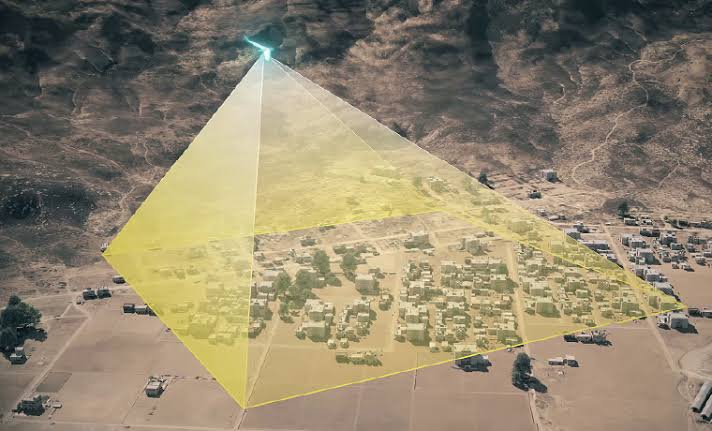

Project Log
A record of what I've worked on in the past and am currently working on, will keep updating implementation details and links with time.

Multi-UAV-UGV Persistent Surveillance Problem
Developing a system for coordinated surveillance using multiple UAVs and UGVs, inspired by prior work.
Implementation notes
Working on a system for coordinated surveillance using multiple UAVs and UGVs, using methods detailed and implemented in work by Safwan Mondal.
- STACK
- PyTorch, simulated reinforcement learning environments
- CHALLENGE
- Maintaining persistent surveillance over mission points with multiple UAVs and UGVs.
- STATUS
- Active — sortie-based dual UAV deployment

Cooperative Embodied Language Agents
Working on developing a novel architecture for cooperative, language-conditioned embodied agent system based on belief graphs.
Implementation notes
Working on a novel architecture where a shared language grounding module is queried independently by each agent, then reconciled through a lightweight coordination layer rather than a single centralized planner.
- STACK
- PyTorch, simulated embodied environments
- CHALLENGE
- Grounding language consistently across agents with different partial observations
- STATUS
- Active — architecture design & ablations

Multi-Drone Object Tracking
PX4 + ROS2 system enabling multiple drones to cooperatively track objects, with a focus on real-time performance in dynamic environments.
Implementation notes
Each drone runs a lightweight perception node that publishes target detections to a shared tracking bus; a consensus layer resolves overlapping detections across agents before handing a fused estimate back to the flight controller.
- STACK
- ROS2 (rclpy), PX4 SITL, Gazebo, XBee for inter-agent comms
- CHALLENGE
- Keeping fused-target latency low enough for real-time re-tasking across agents
- STATUS
- Active — SITL validated, hardware-in-the-loop next

IoT Soil Sensing Module
Precision-agriculture soil monitoring system developed during an ISRO internship.
Implementation notes
Deployed a low-power sensor node that logs soil moisture, temperature, and conductivity, transmitting over a long-range link to a base station for field-scale monitoring.
- STACK
- ESP32, LoRa module, custom calibration firmware
- OUTCOME
- Delivered as part of ISRO internship deliverables

Portable AQI Monitoring System
Portable air-quality monitoring module calibrated against the CPCB AQI model.
Implementation notes
Combined particulate and gas sensors into a single handheld unit, with on-device calibration curves fitted against the CPCB AQI standard for India.
- STACK
- MCU firmware, PM2.5/PM10 + gas sensors
- OUTCOME
- Working handheld prototype, field-tested

Embedded Rover Control System
STM32-based rover control system using Zigbee communication.
Implementation notes
Built the low-level motor control and communication stack for a wheeled rover, with a Zigbee link handling remote command and telemetry.
- STACK
- STM32, Zigbee radios, custom PCB
- OUTCOME
- Fully working teleoperated rover
LoRa Environmental Monitoring Network
Distributed sensing system using ESP32 nodes over a LoRa mesh network.
Implementation notes
Several field nodes report environmental readings over a self-forming LoRa mesh, trading range for the low infrastructure cost that made campus-scale deployment practical.
- STACK
- ESP32, LoRa (mesh routing), solar/battery power
- OUTCOME
- Multi-node mesh deployed and validated
Early to Share, Late to Save: Synchronisation-Driven Communication Gating in Bandwidth-Constrained Cooperative VLN
This paper presents a novel approach to communication gating in vision-language navigation tasks, addressing bandwidth constraints in cooperative settings. Proposes a lightweight supervised gate that labels communication-critical steps post-hoc from navigation failures, avoiding the high variance of REINFORCE.
Implementation notes
Short note on the approach, what you built, and any notable design decisions.
- STACK
- ...
- OUTCOME
- ...